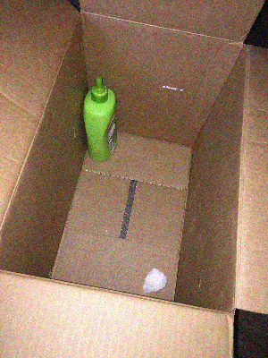

Otwarto 08/04/2010
<DZIENNIK OTWARTY>
Zobaczyłem dzisiaj moją nową sąsiadkę i chyba się zakochałem. Jest taka piękna i po prostu nie wiem, co robić!
<3
Myślę, że wiesz, co robić...
Obserwowałem ją cały dzień. Nawet nie mogę do niej podejść, żeby się przywitać, tak bardzo się wstydzę. Słyszałem, jak rozmawiała na zewnątrz. Mówiła coś do konserwatora . Zrobiłem jej zdjęcie :)
Jest wspaniała! Jestem zazdrosna :)
Założę się, że pachnie cudownie...
Pachnie niesamowicie! Samo myślenie o tym sprawia, że nabrzmiewam.
Chyba widziała, jak patrzę na nią przez okno i uśmiechnęła się do mnie... Prawie wtedy doszedłem. Jest niesamowita.
Myślałem o tym, co zrobić z tym wszystkim, co czuję. Potrzebuję jakiegoś uwolnienia!
Po prostu wyjmij te cycki i daj czadu.
Pierdol się! Tak bardzo ją kocham! Spuszczę ci wpierdol, stary. Ale ma wspaniałe piersi.
Szacun.
Urządzała się w swoim mieszkaniu i chyba miała jakieś rzeczy do łazienki, których nie chciała, bo na zewnątrz leży torba... Właśnie wyszła z jakiegoś powodu.
Coś dobrego w środku?
Zajrzałem do torby i pachnie jak ona. Wziąłem starą butelkę szamponu. Nie wiem, co z tym zrobić, ale nigdy bym tego nie wyrzucił. Znalazłem pudełko, żeby trzymać te rzeczy, dopóki czegoś nie wymyślę.

o stary, zrobiłeś coś z tym?
Na razie nie. W środku właściwie nic nie ma, szkoda, że nie udało mi się zdobyć czegoś więcej.
Torba wciąż tam jest? Może możesz jeszcze raz zerknąć.